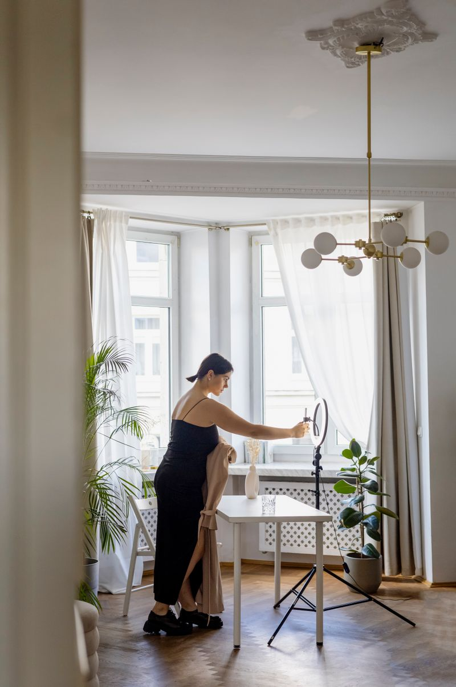
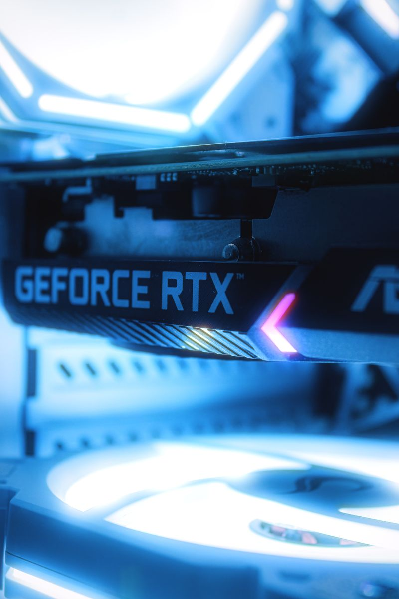

Universidad Mariano Gálvez
Explora y descubre tecnología
Álbum digital de componentes de PC, smartphones, periféricos, audio y cables. Explora sus características y precios de referencia antes de decidir.
–productos
–categorías
–marcas
¿Qué quieres explorar?
Elige una ruta y revisa productos que se adaptan a ese contexto.
 Armar o mejorar una PCProcesadores, gráficas, memoria y más.Ver componentes →
Armar o mejorar una PCProcesadores, gráficas, memoria y más.Ver componentes →

Estudiar y trabajarEquipos y accesorios para tu día a día.Ver opciones →
Jugar y crearPotencia visual, audio y periféricos.Ver tecnología → Elegir un smartphoneOpciones de gama baja, media y alta.Ver teléfonos →Productos destacados
Explora por categoría
Desliza o usa las flechas para descubrir componentes, periféricos y dispositivos.
Tu ruta para elegir mejor
Una experiencia simple para descubrir, revisar y comparar tecnología.
01ExploraNavega el álbum según la categoría que te interesa.
02RevisaAbre cada ficha para conocer precio y especificaciones clave.
03ComparaContrasta productos y consulta la recomendación final.